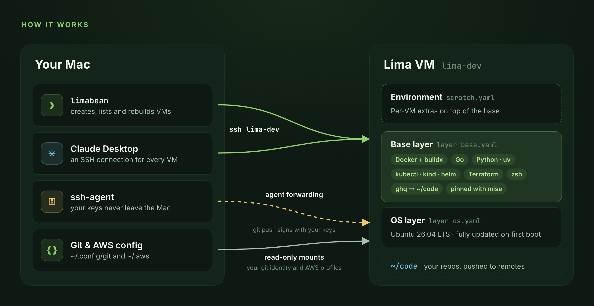

One command per VM
limabean new dev gives you an Ubuntu 26.04 VM with your git identity, ready in about a minute.
Disposable Linux dev VMs for macOS,
ready for SSH and Claude.
go install github.com/rossedman/limabean/cmd/limabean@latest
Why limabean
limabean new dev gives you an Ubuntu 26.04 VM with your git identity, ready in about a minute.
Docker Engine, Go, Python, Kubernetes tooling, Terraform and 30+ CLI tools, every version pinned with mise.
Pushes go through your forwarded ssh-agent. A scoped GitHub token lives in your Keychain, and git and AWS config are mounted read-only.
API keys come from your Keychain, 1Password, environment variables or commands. You pick which ones a VM gets when you create it.
Each running VM shows up in Claude Desktop as an SSH connection. Claude works with the VM's tools and can't touch files on your Mac.
rm and rebuild refuse to run while you have unpushed work, so a disposable VM never takes your commits with it.
Quick start
limabean is a single binary with its VM templates built in. All it needs is macOS and Lima 2.0 or newer. Prebuilt binaries for Apple Silicon and Intel are on the releases page.
Full getting-started guide$ brew install lima
$ go install github.com/rossedman/limabean/cmd/limabean@latestSaves your settings, fixes ~/.ssh/config and checks everything with doctor.
$ limabean init$ gh auth token --hostname github.com | limabean github login --with-token$ limabean new dev
$ limabean ssh dev # or: ssh lima-devHow it works
Every VM is built from ordinary Lima YAML and shell scripts, composed in layers. limactl always works, and you can add your own environments without rebuilding limabean.

Ubuntu 26.04 LTS on Apple's Virtualization framework, VM size, agent forwarding, zsh as the login shell.
What every VM gets: Docker Engine, mise-pinned tools, shell setup and the read-only git config mount.
scratch out of the box, or your own in ~/.config/limabean/templates/.
Commands
Leave out a VM name and you pick one from a list. Every command has --help with examples.
Documentation